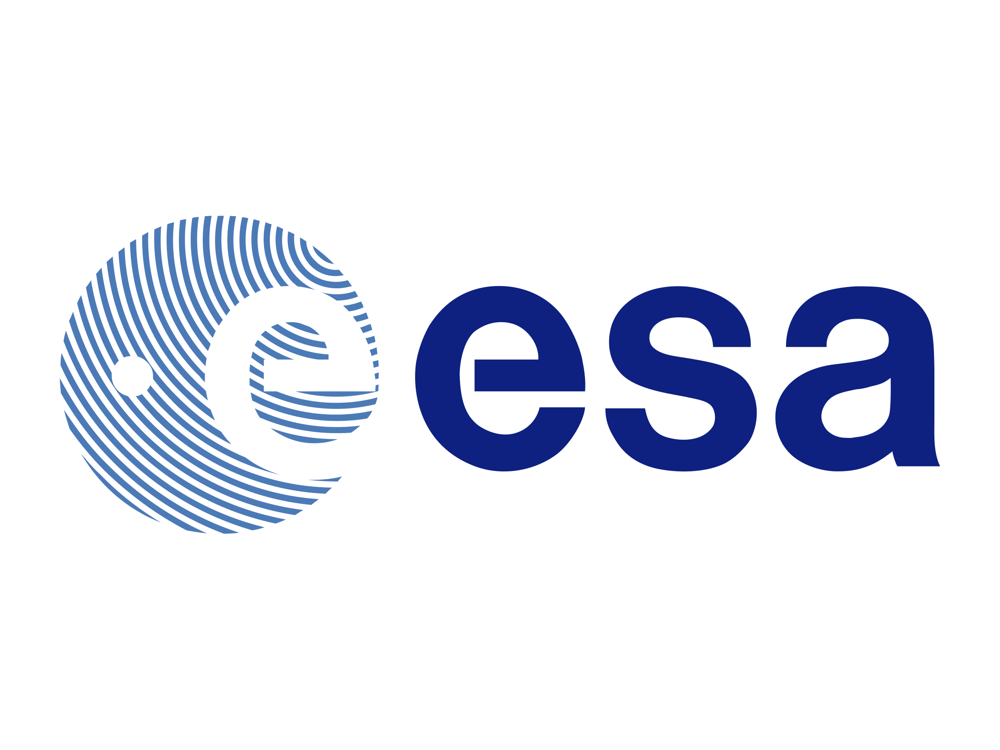

The Hubble Space
Telescope

33 Years old
Overview

Briefly explain HST
Where Do the Colors in Hubble's Images Come From
?
Hubble transmits about 140 gigabytes of science data every week back to Earth. That's equal to about 45 two-hour, HD-quality movies or about 30,000 mp3 songs. The digital signals are relayed to satellites, then to a ground station, then to NASA's Goddard Space Flight Center, and finally to the Space Telescope Science Institute. The STScI translates the data into images and information we can understand.

Hubble Space Telescope First Photo Taken.
The electromagnetic spectrum shows that visible light is between infrared radiation and ultraviolet radiation.
Properties and features
Facts ABOUT HST
International Partners

The Hubble Space Telescope is an international collaboration between NASA and the European Space Agency (ESA).

Overall responsibility for the Hubble Mission and Operations.

Provided the original faint object Camera and Solar Panels, and provides science operations support